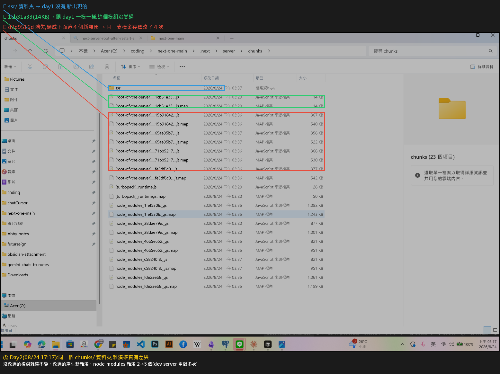

前端專案建立與打包選型｜Vite、create-vue、Next.js 與 npm 鎖版本
三場對話合成一條線：要不要用 Next.js（選型） → Vue 專案該用哪支 CLI 建（工具） → 建完之後 npm install 到底做了什麼（產物）。
a. 承接 [[前端開發工具-打包編譯Lint與Parser]]：那篇把「打包 / 編譯 / Lint / Parser」的角色分工講清楚，本篇是它的「實際選型與踩坑」續集，回答「同一類工具裡我該選哪一個」。
b. 呼應 [[Vite-HMR機制與Rollup打包原理]]：那篇講 Vite 為什麼快（dev 用 esbuild 預打包加原生 ESM，build 交給 Rollup），本篇的 c 節「Vite 只吐一個 index.html 加 bundle」正是那個機制的產出面。
c. 呼應 [[next-turbopack-server-chunks-hash-comparison]]：那篇實測 Next.js 的 server chunks 與 hash 行為，剛好就是本篇 b 節「Next.js 底層保留完整伺服器端路由與 Runtime 抽象層」的證據。
d. 呼應 [[npm-run-script-mechanism]]：那篇講 npm script 怎麼跑，本篇 j、k、l 節補上 package.json 與 package-lock.json 的版本語意。
e. 呼應 [[2026-06-02-Dev-Server-功能與價值]]：本篇 f 節提到 create-vue 基於 Vite，Vite 的價值主要就展現在 dev server 上。
重點整理
一、Next.js 還是 Vite（a–d）
a. 這題的起點是一句建議：「想徹底脫離 Next.js 打包限制，建議評估架構是否真需要 Next.js，若僅為 SPA 可直接轉用 Vite。」乍看很怪——Next.js 明明也能做 SPA 啊？
b. 關鍵在於 Next.js 的 SPA 是「偽裝成 SPA 的全棧架構」。就算你全部元件都加 "use client"，或在 next.config.js 設 output: 'export' 匯出純靜態 HTML 與 JS，Next.js 底層依然保留完整的伺服器端路由與 Runtime 抽象層。打包時 Webpack 或 Turbopack 仍需處理複雜的元件切割（Code Splitting）與路由映射。
c. Vite 才是最純粹的 SPA：打包產物就是一個 index.html 加上打包好的 bundle JS。瀏覽器下載後全由前端 React 接管路由，完全不需要 Node.js 伺服器或全棧構建邏輯。
d. 選型結論（拿大砲打小鳥的成本）：如果專案完全不需要 SEO、SSR、SSG、API Routes 或 React Server Components，用 Next.js 等於為了 10% 的功能承擔 100% 的打包複雜度。
| 情境 | 建議 | 理由 |
|---|---|---|
需要 SEO、動態 Open Graph 預覽圖、伺服器端 API，或想用 next/image 內建優化 |
繼續用 Next.js | 這些正是 Next.js 的核心價值 |
| 純後台管理系統、需登入才看得到的 Dashboard、離線 Web App | 果斷轉用 Vite + React | 冷啟動更快、設定檔更輕、外掛生態隨插即用，不會撞上 Turbopack 或 Webpack 綁定 Next.js 造成的不相容 |
┌──────────────── Next.js（全棧） ────────────────┐
瀏覽器 →│ Runtime 抽象層 → 伺服器端路由 → 元件切割 → RSC │→ 畫面
└────────────────────────────────────────────────┘
即使 output:'export' 也還在
┌──────────── Vite + React（純 SPA） ────────────┐
瀏覽器 →│ index.html + bundle.js → 前端路由接管 │→ 畫面
└────────────────────────────────────────────────┘
不需要 Node.js 伺服器

Abby 自己的截圖（2026-08-24，含手動標註）：這是 Next.js 打包後 chunks 與 hash 的實測畫面。畫面上那一堆被切碎的檔案，就是本節 b 點講的「Webpack／Turbopack 仍需處理複雜的 Code Splitting 與路由映射」的具體長相。詳細分析見 [[next-turbopack-server-chunks-hash-comparison]]。上面這張對照圖如果想畫得更漂亮，建議用 Excalidraw 外掛畫一張「Next.js 全棧管線 vs Vite 純 SPA 管線」的雙軌圖，把「Runtime 抽象層」那一格標紅，視覺記憶會比純文字強很多。
二、Vue 專案該用哪支 CLI（e–i）
e. vue create 是舊工具 Vue CLI 提供的指令。Vue CLI 本身就是一個終端機命令列工具（CLI，Command Line Interface），用來自動化建立新專案的樣板。
f. create-vue 是 Vue 官方現在推薦的建立工具，它取代了過去的 vue create，並且是基於 Vite 運作，速度更快也更現代。可以把它看成 vue create 的接班人。
g. 建專案時選項會問「Vue 3.6 還是 Oxfmt」這類問題，答案是它們根本不是同一類東西，可以同時選：Vue 3.6 是前端框架的核心版本，Oxfmt 是程式碼排版工具（formatter）。
h. Windows 用 Git Bash 的踩坑：Git Bash 搭配的終端機模擬器是 MinTTY，它不是 Windows 原生的主控台（Console）。執行 vue create 這種需要互動輸入的指令時，選單會無法正常操作。
i. 官方解法是在指令前面加上 winpty。winpty 是 Windows pseudo-TTY 的縮寫（pseudo-TTY 就是「虛擬終端機」，TTY 這個縮寫源自早年的 Teletypewriter 電傳打字機）。它的效果是模擬一個虛擬的 TTY 環境，讓互動提示能正常顯示並接收鍵盤輸入。
# Git Bash + MinTTY 下建立 Vue 專案
winpty vue create my-project # 舊工具，需要 winpty 包一層
npm create vue@latest # 官方現行推薦，基於 Vite
前後端一起放的練習專案，社群常用的資料夾名稱是 fullstack-playground（強調全端架構）或 vue-fullstack-playground（明確指出框架）。
三、npm install 之後多了什麼（j–l）
j. npm install 會做兩件事：建立 node_modules 資料夾放所有下載的套件，並新增或更新 package-lock.json 記錄確定的套件版本。
/nodejs安裝目錄與npm_2026-03-24.png) Abby 自己的截圖（2026-03-24）：Node.js 安裝目錄與 npm 的位置。
Abby 自己的截圖（2026-03-24）：Node.js 安裝目錄與 npm 的位置。npm install 就是這支工具在跑，產物才會出現在專案的 node_modules 底下。
k. package.json 與 package-lock.json 的差別（面試常考）：
| 檔案 | 記的是什麼 | 用途 |
|---|---|---|
package.json |
有彈性的版本「範圍」 | 宣告我接受哪些相容版本，允許安裝時自動更新 |
package-lock.json |
當時實際安裝的「確切版本」 | 鎖定版本，確保每個人 / 每台 CI 機器裝到的東西完全相同 |
l. 「彈性範圍」不是根據你的程式碼推算的，而是看版本號前面的符號：
{
"dependencies": {
"vue": "^3.5.13", // ^ 允許更新到 3.x.x 的最新（不跨大版號）
"axios": "~1.7.2", // ~ 只允許更新到 1.7.x 的最新（不跨次版號）
"lodash": "4.17.21" // 沒符號 = 完全鎖死這個版本
}
}
很多人以為 package-lock.json 可以不用 commit 進 git——恰恰相反，一定要 commit，它就是「重現同一份 node_modules」的唯一依據。真正不該 commit 的是 node_modules 資料夾本身。
同一場對話順帶問到 Pinia。Pinia 是 Vue.js 的官方狀態管理工具，用來管理應用程式中的共享資料，等於是應用程式的集中式大腦。特點是語法直觀、TypeScript 支援極佳，而且比傳統的 Vuex 更輕量、更容易維護。
a. 第三場對話（2546a123398f1bbb）標題叫「Loader 與前端打包工具」，但實際內容並沒有談到 Loader（webpack loader）。那是語音模式的對話，中間夾雜大量與技術無關的閒聊與語音辨識錯字，本篇只擷取確實有技術內容的段落。若 Abby 想補齊 Loader 的概念，建議另外開一場專門的對話，或直接看 [[前端開發工具-打包編譯Lint與Parser]]。
b. 對話中把 create-vue 一度講成「create create」，是語音辨識錯誤，正確工具名是 create-vue，實際使用指令為 npm create vue@latest。
c. Gemini 回答中出現的 winpty 一詞被使用者的日文輸入干擾成「人気」，Gemini 有正確糾正，此處記錄以免日後看逐字稿誤解。
自我測驗
output: 'export' 之後，打包架構就跟 Vite 的純 SPA 一樣單純了。package.json 裡的 ^3.5.13 代表只能安裝 3.5.13 這個版本。^ 表示允許更新到不跨大版號的最新版（3.x.x）；~ 才是只允許 3.5.x；完全沒有符號才是鎖死單一版本。（本篇 l 節）一、後台需登入才看得到，搜尋引擎爬不到也不需要爬，因此 SEO 與 SSR 的價值等於零，Next.js 最核心的賣點用不上。
二、Vite 冷啟動與 HMR 明顯更快，開發體驗好，設定檔輕量、沒有框架強加的目錄約定。
三、外掛生態可以隨插即用，不會遇到 Turbopack 或 Webpack 綁定 Next.js 版本造成的相容性問題。
四、部署簡單，產物是純靜態檔案，丟 CDN 或任何靜態主機即可，不需要 Node.js 伺服器。
（反向補充：如果之後可能要加伺服器端 API 或做對外行銷頁，再評估切回 Next.js 或另開一個 Next.js 專案。）（本篇 b、c、d 節）
各對話來源（原文精華）
1. Next.js 的打包工具選擇與替代方案（2026-08）— https://gemini.google.com/app/590097ec1f008f93
使用者： 什麼意思阿「想徹底脫離 Next.js 打包限制：建議評估架構是否真需要 Next.js，若僅為 SPA 可直接轉用 Vite」。Next.js 也有 SPA 吧？
Gemini： Next.js 確實可以做到「全單頁應用（SPA）」的體驗，但它的運作機制跟傳統 Vite + React 的 SPA 有本質上的不同……Next.js 的模式：即使你全用 "use client"，或在 next.config.js 設定 output: 'export' 匯出純靜態 HTML/JS，Next.js 底層依然保留了完整的伺服器端路由與 Runtime 抽象層……Vite 的模式：就是最純粹的 SPA。打包時只有一個 index.html 加上打包好的 Bundle JS……如果專案完全不需要 SEO、伺服器端渲染（SSR）、靜態生成（SSG）、API Routes 或 React Server Components (RSC)，用 Next.js 就等於是為了 10% 的功能，承擔了 100% 的 Next.js 複雜打包架構。
2. Vue CLI 維護模式與 Vite（2026-08）— https://gemini.google.com/app/8db118c128e89946
使用者： 那 create-vue 又是算什麼？
Gemini： create-vue 是 Vue 官方現在推薦用來建立 Vue 3 專案的工具。它取代了過去的 vue create，並且是基於 Vite 來運作的……Vue CLI 它本身就是一個終端機命令列工具，也就是 CLI。畫面上的 vue create 是這個工具提供的指令。
使用者： 你就告訴我 MinTTY 是什麼，這樣就好了。
Gemini： MinTTY 是一個在 Windows 系統下運行的終端機模擬器，常常被搭配使用於 Git Bash。因為它不是 Windows 原生的主控台，所以在使用像是 vue create 這種需要互動輸入的指令時，會出現無法正常操作的情況。為了解決這個問題，官方建議在指令前加上 winpty……加入 winpty 的效果，就是幫你模擬一個虛擬的 TTY 終端機環境，讓互動提示能夠正常顯示並接收你的鍵盤輸入。
3. Loader 與前端打包工具（2026-08，語音模式）— https://gemini.google.com/app/2546a123398f1bbb
使用者： 那譬如 3.6 跟 Oxfmt 我應該要選哪一個？
Gemini： Vue 3.6 是前端框架的核心版本，而 Oxfmt 是程式碼排版工具。它們屬於不同的工具類別，在 CLI 設定中你可以根據需要同時選取這兩者。
使用者： npm install 的時候會增加什麼檔案？
Gemini： npm install 會自動建立一個 node_modules 資料夾來放所有下載的套件，並會新增或更新 package-lock.json 來記錄確定的套件版本。
使用者： npm lock 跟 package.json 裡面的數字是差在哪裡？
Gemini： package.json 中的版本號通常是有彈性的範圍，允許安裝相容的更新；而 package-lock.json 則鎖定了當時安裝的確切版本，確保每次下載的內容完全相同……不是根據您的程式碼，而是看您當初設定的相容性範圍，例如版本號前的「^」或「~」，代表允許自動更新到哪些相容版本。
使用者： 介紹 Pinia。
Gemini： Pinia 是 Vue.js 的官方狀態管理工具，用來輕鬆管理應用程式中的共享數據，就像是應用程式的集中式大腦。它最大的特點是語法直觀、對 TypeScript 支援極佳，而且比傳統的 Vuex 更輕量、更容易維護。
資料來源（含查證時間）
| 主題 | 連結 | 版本／查證時間 |
|---|---|---|
| Gemini 對話：Next.js 的打包工具選擇與替代方案 | https://gemini.google.com/app/590097ec1f008f93 | 對話時間 2026-08，擷取於 2026-08-25 |
| Gemini 對話：Vue CLI 維護模式與 Vite | https://gemini.google.com/app/8db118c128e89946 | 對話時間 2026-08，擷取於 2026-08-25 |
| Gemini 對話：Loader 與前端打包工具（語音模式） | https://gemini.google.com/app/2546a123398f1bbb | 對話時間 2026-08，擷取於 2026-08-25 |
Vue 官方：Quick Start（npm create vue@latest） |
https://vuejs.org/guide/quick-start.html | 查證於 2026-08-25 |
| Vue CLI 官方文件（含維護模式聲明與 winpty 提示） | https://cli.vuejs.org/ | 查證於 2026-08-25 |
Next.js 官方：Static Exports（output: 'export'） |
https://nextjs.org/docs/app/guides/static-exports | 查證於 2026-08-25 |
| Vite 官方文件 | https://vite.dev/ | 查證於 2026-08-25 |
| npm 官方：package-lock.json | https://docs.npmjs.com/cli/v10/configuring-npm/package-lock-json | 查證於 2026-08-25 |
| npm 官方：semver 版本範圍語意（^ 與 ~） | https://docs.npmjs.com/about-semantic-versioning | 查證於 2026-08-25 |
| Pinia 官方文件 | https://pinia.vuejs.org/ | 查證於 2026-08-25 |